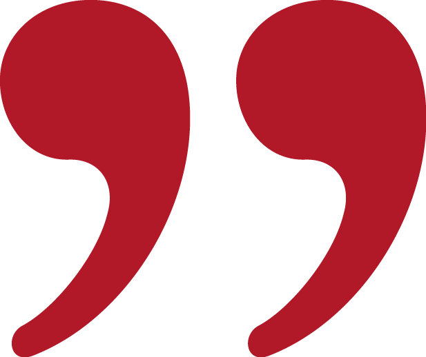

"격리된 온실에서"
권혁규
Kwon, Hyukkyu
instagram @hyuk_q
"궁궐의 도시, 서울?
그곳은 어떤 곳 일까."
기하은
Ki, Haeun
instagram @eunney09
"재현을 폐기하는 데 이르는 길을
가리키고 있다."
김기홍
Kim, Kihong
instagram @hyuk_q
"나는 매일 밤
홀로 대화를 시작한다."
김아정
Kim, Ajeong
instagram @aj._.design
"실리의 골격을 닮은 문장이
(…) 달라지는 걸
지켜보는 게 좋았다."
김연재
Kim, Yeonjae
"하나둘씩
반짝이기 시작한다."
박도현
Park, Dohyun
instagram @do.hyun.p
"애벌레는
플라스틱을 먹을 수 있다."
박예원/손석민
Park, Yaewon/Son, Sukmin
instagram @biggerfaster/@park2eung2eung
"지옥은 바로 타인들이야"
백윤주
Baek, Yunju
instagram @100_yunnjj
"혼자서
명절을 쇨 수는 없을까?"
성지원/우지명
Seong, Jiwon/Woo, Jimyung
instagram @seongjiwon_
"셀은 표 편집의
기본 단위가 됩니다."
손효연
Son, Hyoyeon
instagram @vinylhand
"따라란- 박수 짝짝-
변신완료!"
양진영
Yang, Jinyoung
instagram @ozo_fficial
"단 하나의 아름답고
은유적인 문장을 생각했어."
이사은
Lee, Saeun
instagram @sophielee712
"시네도키 식물원은
접어서 보관할 수 있다."
정서회
Jung, Sohay
instagram @
"기억 조각은 켜켜이 쌓여
공간의 기억이 됩니다."
조가영
Cho, Gayoung
instagram @xyamnyamx
"보이지 않는 OO들"
조민주
Cho, Minjoo
"모두 내 삶에서 일어난 일"
최효원
Choi, Hyowon
instagram @
"그것은 글이라는 매체의
의의를 지키는 일입니다."
황보영
Hwang, Boyoung
instagram @_0.bd.0_
